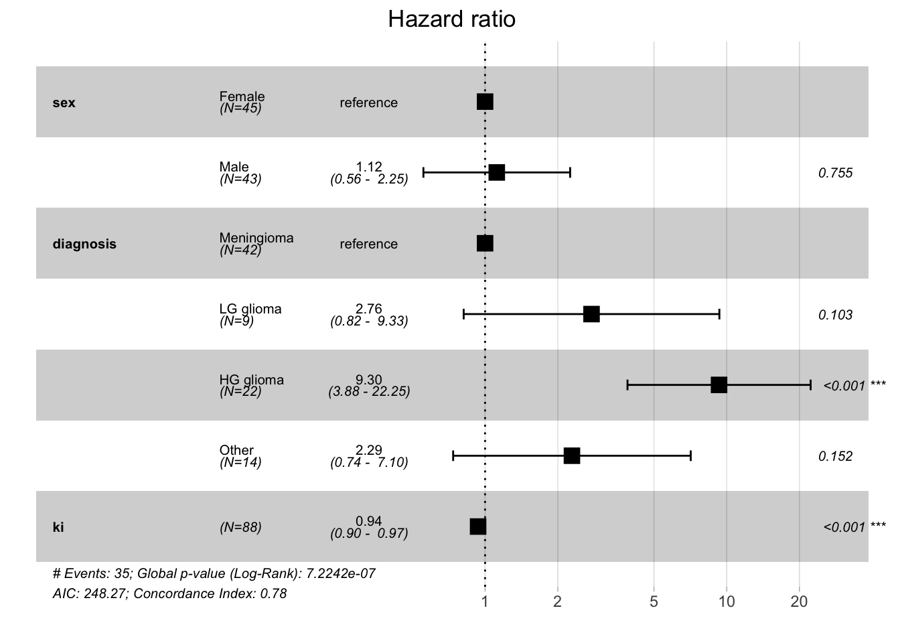

If survival time is of interest, such as in mortality studies, a common approach is to postulate a distribution for survival time and estimate the parameters of this distribution from the data. For instance, the exponential distribution can be used if the death rate is independent of time, the Weibull distribution allows for increasing or decreasing hazard rates, and the Gompertz distribution models hazard rates that exponentially increase or decrease over time.
More commonly, it is the relationship between survival time and one or more predictor variables (covariates) that is of interest. The Cox proportional hazards model is a widely used semi-parametric model to study this relationship. It is used to estimate the hazard ratio for individuals based on their covariates, without needing to specify the baseline hazard function.
Estimation of \(\boldsymbol{\beta}\) and inferences are developed by considering the information supplied at each time that a death (event) occurred.
Consider:
a death occurring at time \(t_j\), and
suppose that there were \(n_j\) subjects alive just before \(t_j\),
that the values of \(\boldsymbol{x}\) for these subjects are \(\boldsymbol{x_1}, \boldsymbol{x_2}, \cdots, \boldsymbol{x_{n'j}}\)
and that the subject that dies is denoted, by the subscript 1
Then:
The set of \(n'_j\) subjects at risk is referred to as the risk set.
The risk of death at time \(t_j\) for each subject in the risk set is given by: \[h(t) = h_0(t)\textrm{exp}(\boldsymbol{\beta}^T\boldsymbol{x})\]
where:
\(\boldsymbol{\beta}^T\boldsymbol{x}\) is the matrix representation of the regression function, \(\beta_1x_1 + \beta_2x_2 + \cdots + \beta_px_p\)
and \(h_0(t)\) is baseline hazard function
The risk of death at time \(t_j\) in the risk set does not supply absolute measures of risk, but does supply the relative risks for each subject, since, although \(h_0(t)\) is unknown, it is the same for each subject. Thus the probability that the death observed at \(t_j\) was of the subject who did die at that time is: \[p_j = \frac{\textrm{exp}(\boldsymbol{\beta}^T\boldsymbol{x_1})}{\sum \textrm{exp}(\beta^T\boldsymbol{x_i})}\] where summation is over all remembers of the risk set.
Similar terms are derived for each time that a death occurred and are combined to form a likelihood (product of these probabilities over all event times \(t_j\)): \[PL(\boldsymbol{\beta}) = \prod_{j=1}^{k} \frac{\exp(\boldsymbol{\beta}^T \boldsymbol{x_1})}{\sum_{i \in \text{risk set at } t_j} \exp(\boldsymbol{\beta}^T \boldsymbol{x_i})}\] Technically this is called partial likelihood, since the component terms are derived conditionally on the times that deaths occurred and the composition of the risk set at these times. This partial likelihood is used to estimate the regression coefficients \(\boldsymbol{\beta}\) in the Cox model. Maximizing this partial likelihood gives the best estimates for \(\boldsymbol{\beta}\), quantifying the effect of the covariates on the hazard.
To estimate \(\beta\), we maximize the partial likelihood function with respect to \(\beta\). No closed-form solution is available, and so iterative algorithms are used.
2.2 Example with brain cancer data
The BrainCancer data set from the ISLR2 package contains survival times for patients with primary brain tumors undergoing treatment with radiation therapy. Variables included in the study are:
sex: male or female
diagnosis: meningioma, LG glioma, HG glioma, or other
loc: tumor location, infratentorial or supratentorial
gtv: gross tumor volume \(cm^3\)
ki: Karnofsky index
stereo: stereotatcic radiosurgery (SRS) or fractionated stereotactic (SRT) radiotherapy
# Cox model with multiple predictorsfit.cox_multi <-coxph(Surv(time, status) ~ sex + diagnosis + ki, data = data_brain)summary(fit.cox_multi)
Call:
coxph(formula = Surv(time, status) ~ sex + diagnosis + ki, data = data_brain)
n= 87, number of events= 35
(1 observation deleted due to missingness)
coef exp(coef) se(coef) z Pr(>|z|)
sexMale 0.11149 1.11795 0.35670 0.313 0.754608
diagnosisLG glioma 1.01441 2.75774 0.62159 1.632 0.102687
diagnosisHG glioma 2.22962 9.29629 0.44520 5.008 5.5e-07 ***
diagnosisOther 0.82773 2.28813 0.57751 1.433 0.151774
ki -0.06624 0.93591 0.01753 -3.778 0.000158 ***
---
Signif. codes: 0 '***' 0.001 '**' 0.01 '*' 0.05 '.' 0.1 ' ' 1
exp(coef) exp(-coef) lower .95 upper .95
sexMale 1.1179 0.8945 0.5556 2.2493
diagnosisLG glioma 2.7577 0.3626 0.8156 9.3251
diagnosisHG glioma 9.2963 0.1076 3.8847 22.2467
diagnosisOther 2.2881 0.4370 0.7377 7.0967
ki 0.9359 1.0685 0.9043 0.9686
Concordance= 0.782 (se = 0.038 )
Likelihood ratio test= 36.59 on 5 df, p=7e-07
Wald test = 34.11 on 5 df, p=2e-06
Score (logrank) test = 40.79 on 5 df, p=1e-07
2.2.1 Coefficient interpration
Above, we fitted Cox model using sex and diagnosis as predictors. The results, indicate, for instance that:
The estimated hazard ratio (HR) for a male patient is \(e^{0.11} = 1.11\). This means that men have 1.11 times the hazard of dying than women while keeping other variables constant (sometimes referred to as adjusted hazard ration, AHR).
However the associated Z value is small, resulting in large p-value of 0.75, which indicates that this difference is not statistically significant.
We can also see that one-unit increase in the Karnofsky index is corresponds to a multiplier of \(e^{-0.06} = 0.94\) in the chance of dying. The higher the Karnofsky index score, the lower the chance of dying at any given point in time, with this effect being highly significant \(p\)-value of 0.000158.
Note that if you want to find HR associated with more than 1-unit dffererence, e.g. for patients with 10 units higher Karnofsky index, we would calculate HR as \(e^{-0.06 \times 10} = 0.54\). This means that patients with 10 units higher Karnofsky index have 0.54 times the hazard of dying compared to those with lower Karnofsky index.
Sometimes, in addition to reporting the numeric results of a Cox regression, forest plots are used to visualize HRs and their 95% confidence intervals.
Code
# make forest plot with ggforest()ggforest(fit.cox_multi, data = data_brain)

2.2.2 Global statistical signficance
The output of the Cox regression contains also three methods for an overall test of whether the predictors in the model have a significant effect on the hazard (or risk) of the event occurring. Essentially, these check whether the model as a whole provides a better fit than a null model (a model without any covariates).
Likelihood Ratio Test (LRT) compares the log-likelihoods of two models:
The null model, which includes only the baseline hazard (i.e., no covariates).
The full model, which includes the covariates of interest.
The test statistic is computed as: \[
2 \times (\text{log-likelihood of the full model} - \text{log-likelihood of the null model})
\] This statistic follows a chi-squared distribution, and the associated p-value indicates whether the full model (with covariates) is significantly better at explaining the data than the null model.
Wald Test
The Wald test checks whether the estimated regression coefficients are significantly different from zero. For each predictor, the test examines whether its coefficient, \(\beta_i\), is significantly different from 0, implying that the predictor has a significant effect on the hazard. The Wald test can also be used as a global test of significance.
Score Test (Log-Rank Test)
The Score test (also called the log-rank test in this context) evaluates the contribution of each predictor to the model’s fit, considering the expected number of events. Like the likelihood ratio test, the Score test also compares the null and full models and uses a chi-squared distribution to compute significance.
2.2.3 Concordance
In the context of a Cox proportional hazards model, concordance (also known as the C-index or concordance index) is a measure of how well the model predicts the order of events. Specifically, it assesses the ability of the Cox model to correctly predict which of two individuals will experience an event first, based on their risk scores.
The concordance index (C-index) ranges between 0.5 and 1:
A C-index of 0.5 indicates that the model’s predictions are no better than random chance. This means the model cannot distinguish between individuals who experience the event earlier and those who experience it later.
A C-index of 1 means perfect prediction, indicating that the model always correctly predicts the order of events.
The C-index is similar to the area under the ROC curve (AUC) used in binary classification models, but it is adapted to survival analysis where the goal is to rank individuals by their risk of experiencing the event.
In our example, a concordance of 0.782 means that the Cox model can correctly predict the ordering of survival times 78.2% of the time. In other words, if you randomly select two individuals and compare their predicted risk scores, the model will correctly predict which individual experiences the event earlier in 78.2% of cases. The standard error is 0.038 which provides a measure of uncertainty around the concordance estimate. A smaller standard error indicates more confidence in the estimate.
2.2.4 Predictions
In Cox regression, we can estimate:
the survival probability at a specific time, \(S(t|X=x)\)
and the hazard ratio for an individual relative to a reference individual, $h(t|X=x) / \(S(t|X=x_{ref})\), where \(X_{ref}\) is a reference individual with known covariate values.
For predicted survival, the choice of time matters. A predicted HR will not depend on time due to proportional hazards assumption.
2.2.4.1 Survival
Let’s predict the probability of survival at 40 days, for a new patient (man, with LG glioma, Karnofsky index of 80).
# new patient datanew_pat <-data.frame(time =40, sex ="Male", diagnosis ="LG glioma",ki =80, status =0)predict(fit.cox_multi, newdata = new_pat, type ="survival", se.fit = T)
$fit
[1] 0.4824421
$se.fit
[1] 0.1834607
The probability of surviving through 40 days is 0.48. To get confidence interval we could use:
So the probability of surviving through 40 days is 0.48 with 95% CI [0.23, 1].
2.2.4.2 HR
To predict the adjusted hazard ratio for a new patient, we use again the predict() function, this type with type = "risk". We also need to specify the reference individual. Some options include:
reference = "zero": the reference individual has continuous predictor values set to 0 and categorical predictors each at their reference level. This is not a good choice if a value of 0 is not plausible for continuous variables in the model, e.g. age.
reference = "sample": the reference individual has continuous predictors each their respective sample mean and categorical predictors at their reference level.
reference = "strata": this leads to the same results as in reference = "sample" unless the model includes astrata()`, in which case continuous variables will be set their within-stratum means.
# predict HR for our new patientpredict(fit.cox_multi, newdata = new_pat, type ="risk", reference ="strata", se.fit = T)
$fit
1
3.276632
$se.fit
1
1.201369
Our new patient 3.27 times the hazard of dying compared to a reference individual with level of each categorical predictor and the mean of each continuous predictor, which in our case are (Female for gender, Meningioma for diagnosis, and mean Karnofsky index of 81.02).
2.3 Time-dependent covariates
In all above example the predictors did not vary over time. Each individual had only one value for each predictor. Since survival data is the result of follow-up over time, it is possible to have predictors that do vary over time. For example, in a study of time to heart attack, researchers could record various other conditions’ occurrence over time, such as hypertension or angina. In a study of juvenile recidivism, researchers could record how education or employment status change over time. Cox regression is able to handle such time-varying predictors (also known as “time dependent covariates”).
For time-varying covariates, the hazard function is extended to account for changes in the covariates over time: \[h(t | \boldsymbol{x}(t)) = h_0(t) \cdot \exp\left(\boldsymbol{\beta}^T \boldsymbol{x}(t)\right)\]
where:
\(h(t | \boldsymbol{x}(t))\) is the hazard at time \(t\), conditional on the covariate values at that time.
\(\boldsymbol{x}(t)\) represents the covariate vector at time \(t\). In this case, one or more covariates can change over time.
\(\boldsymbol{\beta}\) is the vector of regression coefficients.
\(h_0(t)\) is the baseline hazard function, which remains time-dependent but does not depend on the covariates.
In practice, time-varying covariates are handled by breaking the follow-up time into intervals where the covariate values are assumed to remain constant, and then updating the covariate values at each interval. Suppose a covariate (e.g., blood pressure, treatment status, or exposure) varies over time. For an individual, we divide their follow-up time into periods where the covariate value is constant, and then treat each period as a separate “observation” in the Cox model. The Cox model then uses these updated covariate values when estimating the hazard at each time point.
The partial likelihood function in the Cox model is modified to incorporate the updated covariate values \(\boldsymbol{x}(t)\). For each event time \(t_j\), the likelihood is based on the covariate values that are valid at that specific time.
The partial likelihood becomes:
\[PL(\boldsymbol{\beta}) = \prod_{j=1}^{k} \frac{\exp\left(\boldsymbol{\beta}^T \boldsymbol{x}_1(t_j)\right)}{\sum_{i \in \text{risk set at } t_j} \exp\left(\boldsymbol{\beta}^T \boldsymbol{x}_i(t_j)\right)}\]
where:
\(\boldsymbol{x}_1(t_j)\) is the covariate vector for the subject who experienced the event at time \(t_j\),
and \(\boldsymbol{x}_i(t_j)\) is the covariate vector for each subject in the risk set at time \(t_j\).
A dataset with time-varying predictors will have multiple rows per individual, with different rows having different values for the time-varying predictors, reflecting how they change over time. Additionally, rather than having a single event time variable, each row will have two time variables indicating the beginning and end of the time interval represented by that row of data.
For instance, in the study of heroin usage, we can see a male participant who started using non-prescribed pharmaceutical opioids (NPPOs) at age 19 (time independent covariates). He did not meet the criteria for lifetime opioid dependence at baseline (wave 1), but did at the next interview (wave2), and he first reported using heroin at his 6th interview (both time varying variables).
RANDID wave START STOP heroin age_at_init sex dep_lifetime
1 10 1 3.78 4.26 0 19 Male 0
2 10 2 4.26 4.78 0 19 Male 1
3 10 3 4.78 5.29 0 19 Male 1
4 10 4 5.29 5.84 0 19 Male 1
5 10 5 5.84 6.27 0 19 Male 1
6 10 6 6.27 6.79 1 19 Male 1
2.4 Multiple events: competing risks
In survival analysis, competing risks occur when an individual is at risk of more than one mutually exclusive event, and the occurrence of one event precludes the occurrence of the others. Traditional survival models, such as the Cox proportional hazards model, typically focus on a single type of event (e.g., death or failure), but in many real-world scenarios, individuals may face different types of events that compete with each other.
A competing risk refers to events that prevent the event of primary interest from happening. For example: - In a study of heart disease, death due to cancer is a competing risk if the primary event of interest is death due to heart disease. - In a study of cancer treatment, death from any cause is a competing risk if the event of interest is relapse.
In these situations, standard survival analysis methods may overestimate the probability of the primary event because they do not account for the possibility of competing events.
The Cumulative Incidence Function (CIF) is commonly used in competing risks analysis. It represents the probability of experiencing a specific event (e.g., death from heart disease) by a certain time, accounting for the presence of competing risks (e.g., death from cancer).
CIF is a product of two estimates.
The estimate of hazard at ordered failure time \(t_j\) for the event of interest: \[\hat{h_c(t_j)}=\frac{d_{cj}}{n_j}\] where:
\(m_{cj}\) denotes the number of events for risk \(c\) at time \(t_j\)
and \(n_j\) is the number of subjects at risk at time \(t_j\)
The estimate of overall probability of surviving previous time: \[\hat{S}(t_{j-1})\] We consider the overall survival as a subject must have survived all other competing events in order to fail from event type \(c\) at time \(t_j\).
The estimated incidence probability of failing from even type \(c\) at time \(t_j\) is then: \[\hat{I_c}(t_j) = \hat{S}(t_{j-1}) \times \hat{h_c(t_j)}\] The probability of failing form even type \(c\) at time \(t_j\) is a product of surviving the previous time periods and the cause specific hazard at time \(t_j\).
The CIF for event type \(c\) at time \(t_j\) is then the cumulative sum up to time \(t_j\), i.e. from \(f' = 1\) to \(f'=f\), of these incidence probabilities over all event type \(c\) failure times, which is expressed: \[CIF_c(t_j) = \sum_{f'=1}^{f}\hat{I_c}(t_j) = \sum_{f'=1}^{f}\hat{S}(t_{f'-1})\times\hat{h_c}(t_{f'})\]
In 1999 Gray (1998) proposed a non-parametric test to compare two or more CIFs. The test is analogous to the log-rank test comparing KM curves, using a modified Chi-squared test statistic. This test does not require the independent censoring assumption.
In Fine and Gray Fine and Gray (1999) proposed a proportional hazards model aims at modeling the CIF with covariates, by treating the CIF curve as a subdistribution function. The subdistribution function is analogous to the Cox proportional hazard model, except that it models a hazard function (as known as subdistribution hazard) derived from a CIF.
Fine, Jason P., and Robert J. Gray. 1999. “A Proportional Hazards Model for the Subdistribution of a Competing Risk.”Journal of the American Statistical Association 94. https://doi.org/10.1080/01621459.1999.10474144.
Gray, Robert J. 1998. “A Class of k-Sample Tests for Comparing the Cumulative Incidence of a Competing Risk.”The Annals of Statistics 16. https://doi.org/10.1214/aos/1176350951.